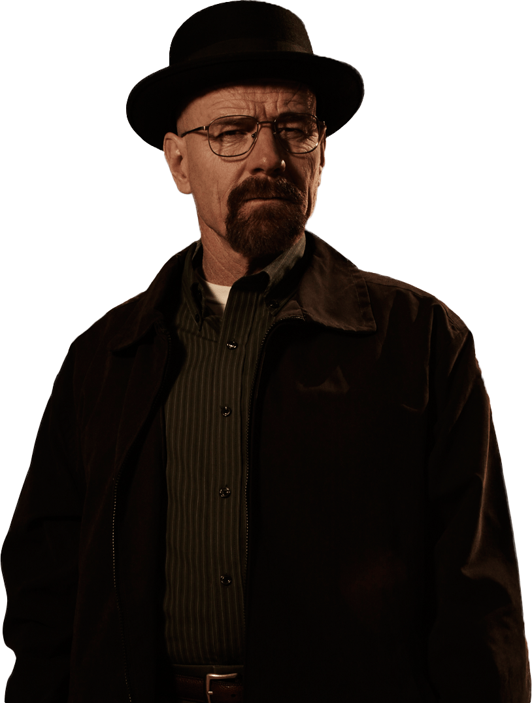
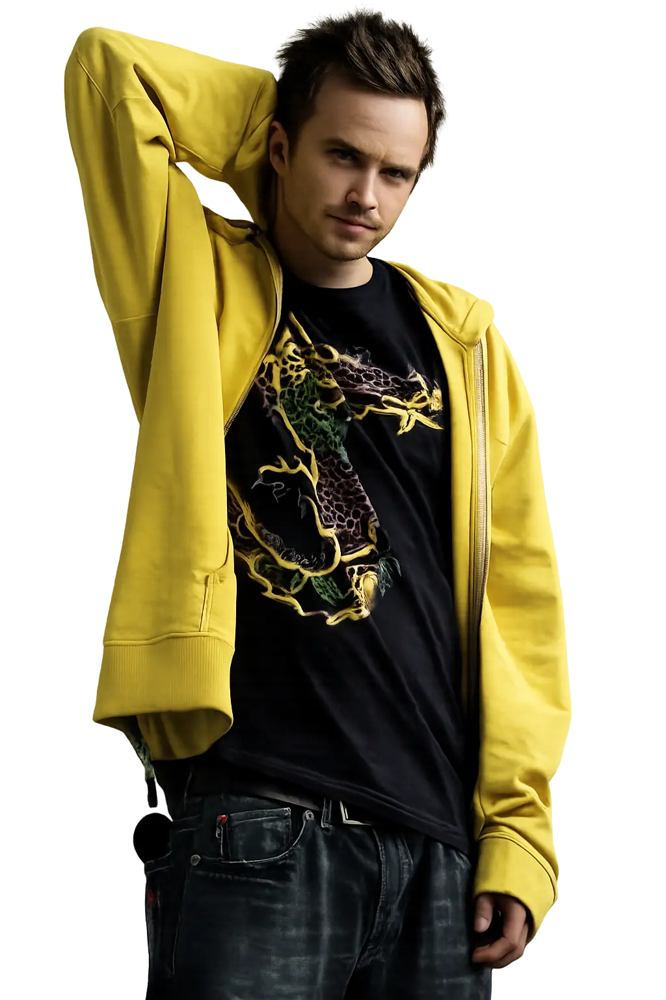
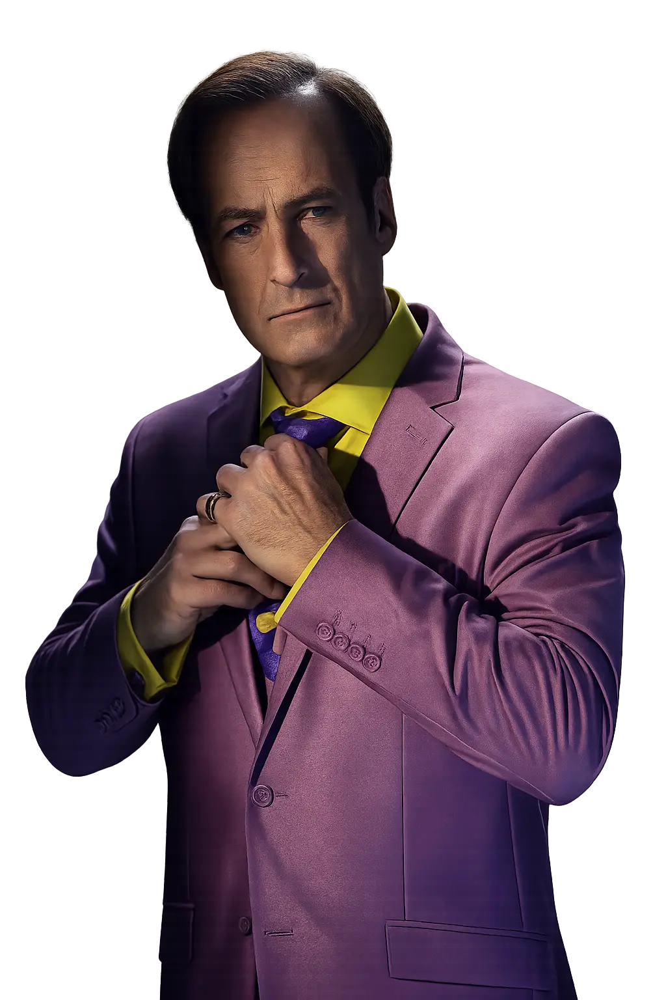
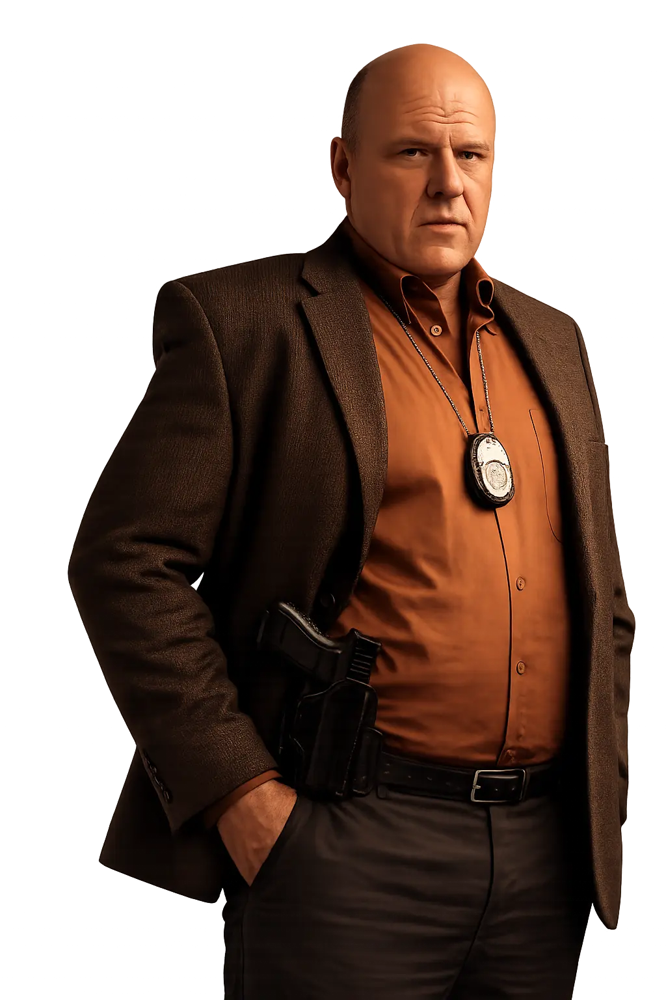
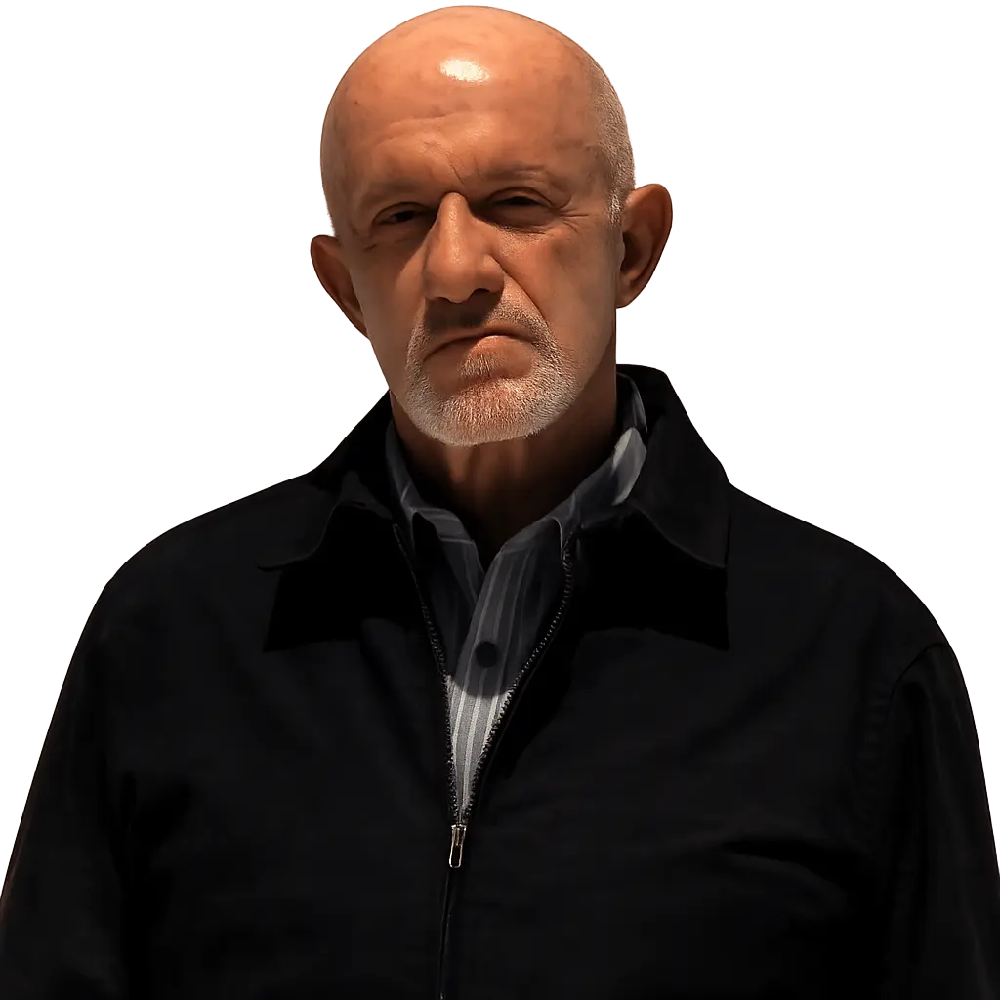

A mild-mannered chemistry teacher turned methamphetamine kingpin. After a terminal cancer diagnosis, Walter White chose power over humility — building a drug empire under the alias Heisenberg. Brilliant, ruthless, and dangerously proud.
A fast food entrepreneur with a double life. Behind the polished smile of Los Pollos Hermanos lies one of the most calculated drug lords in the Southwest. Patient, precise, and absolutely ruthless.

A small-time meth cook turned reluctant partner to his former chemistry teacher. Jesse's journey from street-level dealer to broken survivor is the soul of the story. Loyal, reckless, and more human than anyone around him.

Albuquerque's most colorful criminal lawyer. Equal parts con man and courtroom wizard, Saul Goodman will bend every rule, loop every loophole, and talk his way out of anything — for the right price.

A loud, boisterous DEA agent with sharper instincts than he lets on. Hank is Walt's brother-in-law and his greatest threat — a man who can't let a case go once it gets under his skin.
Walter's wife, who slowly unravels the man she thought she knew. Skyler is sharp, fiercely protective of her family, and one of the few people who ever truly saw Walter White for what he became.

A former cop turned fixer who operates by a strict code. Mike doesn't make threats, he makes promises. Cold, efficient, and quietly the most dangerous man in the room.
A volatile and unpredictable cartel enforcer with a hair-trigger temper. Tuco Salamanca is pure chaos in human form — brilliant enough to run a drug operation, insane enough to destroy it in a heartbeat. The first real taste of danger Walter White ever faced.
A brilliant chemist who settled for less. Walt spent years teaching high school chemistry to students who didn't care, washing cars on weekends to pay bills, and watching his potential rot away. A terminal lung cancer diagnosis changed everything. With nothing left to lose and a family to provide for, he made one decision that would unravel his entire life — his first cook with former student Jesse Pinkman. He told himself it was for his family. It wasn't.
The money was good. Too good to stop. Walt and Jesse built a small but growing operation, and Walt discovered something he hadn't felt in years — purpose. But every step forward came with a cost. Lies piled up at home. Skyler grew suspicious. And Walt made his first truly unforgivable choice — letting Jesse's girlfriend Jane die to protect his control over Jesse. He told himself it was necessary. He was starting to believe his own lies.
Walt entered Gus Fring's world — a state of the art underground lab, a professional operation, and real money. He was no longer a desperate man cooking in a trailer. He was a valued asset. But Gus was in control, and Walt couldn't stand that. His ego grew faster than his bank account. He began manipulating everyone around him — Jesse, Skyler, Hank — like pieces on a chessboard. The teacher was disappearing. Something colder was taking his place.
Walt didn't just survive Gus Fring — he destroyed him. Poisoned a child, manipulated Jesse, orchestrated an assassination in a nursing home. He crossed every line he once swore he never would. And when it was done, he stood in his backyard and said the words out loud for the first time — "I am the one who knocks." His family feared him. His partners obeyed him. He had everything he thought he wanted. He was Heisenberg now, completely and without apology.
Empires don't last. Walt's world collapsed faster than he built it. His brother-in-law Hank uncovered the truth. His family turned against him. He fled, lost everything, and watched people he loved die because of choices he made. In his final conversation with Skyler he dropped the one lie he'd been telling longest — that he did it for the family. He did it for himself. Because he was good at it. Because for the first time in his life he felt truly alive. That admission was the most human thing Walter White ever said.
A chemistry teacher gets a terminal diagnosis and one desperate idea. Walt enters the drug trade raw, scared, and still human.
Walt's double life cracks at the edges. Every choice has a casualty — and the worst one falls from the sky.
Walt burns his last bridge home and steps fully into Gus Fring's empire. Jesse hits rock bottom. There's no version of this that ends well.
Walt vs Gus. The most calculated, slow-burn power struggle on television. One of them doesn't make it out.
Heisenberg wins. Then loses everything. The empire Walt built buries everyone he ever loved — and finally, himself.